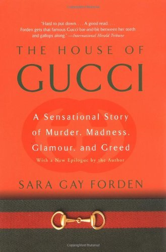

"The House of Gucci: A Sensational Story of Murder, Madness, Glamour, and Greed"
- Read on 2021-07-21
- Rating: ️️️️️
- Format: üéß (16 hours 20 minutes)
What a crazy set of events. "Never mix family and business." I'd love to know if my own perception of that saying is influenced by these events that played out in a rather public way. Really, what a story. And well-written.
Although the book focused on Gucci as a brand, the story certainly made me feel like they were following the family more than the business. But with the additional afterwards in the book, it brought it back to focusing on the business - which I had to admit I still didn't care about, despite having made it through the full book.
- Prior: Churchill
- Next: Project Hail Mary